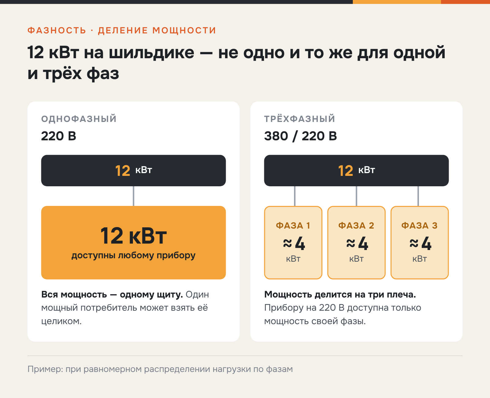
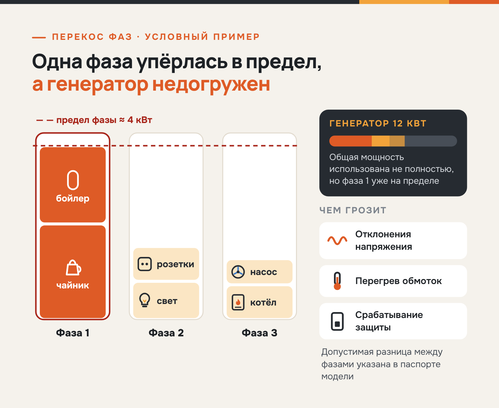
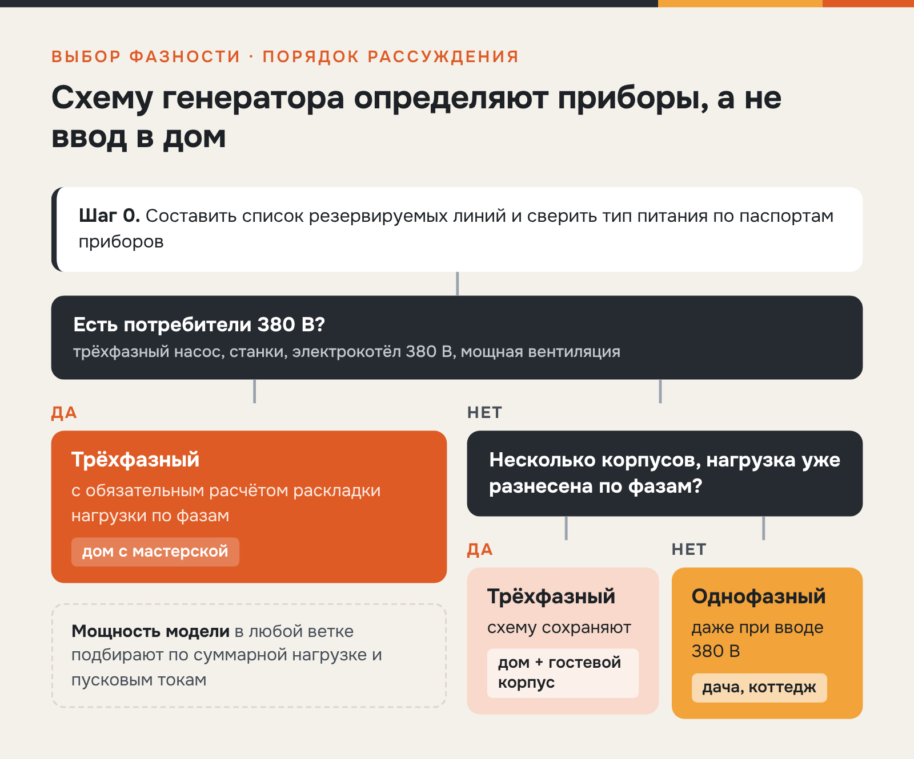
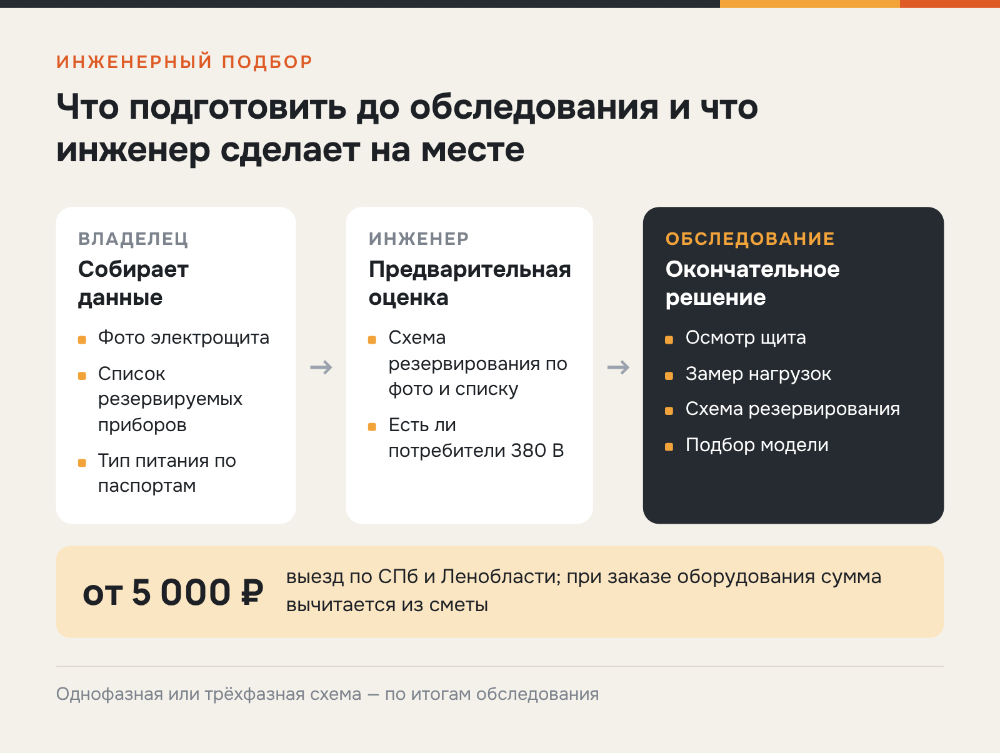

«Энергетические машины» · SEO + GEO · сравнение
Статья для блога «Энергетических машин» об однофазных и трёхфазных генераторах
«Энергетические машины»en-es.ru
«Энергетические машины» подбирают, поставляют, монтируют и обслуживают газовые генераторы для частных домов и коммерческих объектов. Компания работает с 2010 года, офисы в Санкт-Петербурге, Москве и Краснодаре, в каталоге POWERON, GENERAC, MITSUI POWER и другие бренды.
- Площадка
- Блог en-es.ru
- Формат
- Статья в блог по ТЗ SEO + GEO
- Год
- 2026
С 2026 года веду блог поставщика газовых генераторов «Энергетические машины». Статьи пишутся по требованиям SEO и GEO и помогают покупателю выбрать и обслуживать оборудование.
Задача
Объяснить, когда нужен однофазный генератор, а когда трёхфазный.
Решение
Сравнила варианты в таблице и пояснила различия схемами.
Результат
Статья опубликована в блоге en-es.ru. За первый месяц — 1,1 тыс. просмотров.
Однофазный или трёхфазный газовый генератор: что выбрать для дома
Если все резервируемые приборы работают от 220 В, стоит выбрать однофазный генератор. Модель 380 В нужна при наличии трёхфазных потребителей: станков, мощных насосов, котлов с трёхфазным подключением. Сам по себе ввод 380 В выбор не определяет: инженер проверяет щит, список нагрузок и их распределение по фазам.
Фазность — второй по важности параметр после мощности, и ошибиться в нём дорого. Если купить модель 380 В только потому, что в дом заведены три фазы, можно переплатить и получить нестабильную работу при неравномерной нагрузке. Если выбрать 220 В без проверки щита, трёхфазный скважинный насос останется без резерва. Разберём, чем отличаются схемы и по каким признакам делается выбор.
В чём разница между генераторами 220 и 380 В
Однофазный генератор выдаёт одно напряжение 220 В, и вся его мощность доступна любому подключённому прибору. Трёхфазный выдаёт 380 В между фазами и 220 В между фазой и нулём, а его мощность делится на три плеча: агрегат на 12 кВт отдаёт примерно по 4 кВт на фазу при равномерном распределении нагрузки.

Отсюда главный практический вывод: паспортную мощность однофазных и трёхфазных генераторов некорректно сравнивать напрямую. Сравним обе схемы по основным критериям — от напряжения до сложности резервирования:
| Критерий | Однофазный | Трёхфазный | Комментарий инженера |
|---|---|---|---|
| Напряжение | 220 В | 380/220 В | Тип определяется потребителями, а не вводом |
| Мощность | Вся — одному щиту | Делится на три фазы | 12 кВт ≈ 3 × 4 кВт на плечо |
| Потребители 380 В | Не подключить | Работают штатно | Проверить по паспортам приборов |
| Чувствительность к перекосу | Нет | Есть | Требуется распределение нагрузки |
| Схема резервирования | Проще и дешевле | Сложнее, нужен расчёт | Решает обследование щита |
Трёхфазный ввод в дом — ещё не аргумент в пользу 380 В. Если все резервируемые линии однофазные, однофазный генератор подключают к дому с вводом 380 В через правильно собранную схему резерва, и такое решение обычно обходится дешевле.
Когда выбирать однофазный, а когда трёхфазный генератор
Решая, какой генератор выбрать для дома, отталкивайтесь от списка приборов, которые должны продолжать работать во время отключения. Ориентиры по типовым ситуациям:
- Однофазный — базовый выбор для коттеджа. Котёл, циркуляционные и скважинные насосы 220 В, холодильник, свет, розетки. Так устроено электроснабжение большинства частных домов.
- Трёхфазный — при потребителях 380 В. Трёхфазный скважинный насос, станки в мастерской, электрокотёл 380 В, мощная вентиляция.
- Трёхфазный — при большой распределённой нагрузке. Когда резервируется дом с гостевым корпусом, однофазные нагрузки уже распределены между фазами, и для резерва разумно сохранить трёхфазную схему.
Во всех трёх случаях отправная точка одна — паспорта резервируемых приборов, а не тип ввода в дом.
Распределение нагрузки и типичные ошибки
У трёхфазной машины нагрузку раскладывают по фазам равномерно. Когда одно плечо забирает заметно больше остальных, возникает перекос фаз генератора: перегруженная фаза упирается в свой предел раньше, чем генератор выходит на полную мощность.

Перекос может привести к отклонениям напряжения, перегреву обмоток и срабатыванию защиты. Допустимая разница между фазами указана в паспорте модели, и удержать её без продуманной разводки линий сложно.
Распространённая ошибка — выбирать трёхфазный генератор 380 В «с запасом» для дома без трёхфазных потребителей. Такое решение часто не даёт преимуществ: мощность генератора распределяется между тремя фазами, и одна из них может оказаться перегружена раньше, чем будет использована полная мощность. Например, если чайник и бойлер подключены к одной фазе, именно она может первой достигнуть допустимого предела. В таком случае однофазная модель обычно позволяет использовать доступную мощность рациональнее.
— инженер по резервному электроснабжению компании «Энергетические машины»
Ошибки на этапе выбора повторяются из проекта в проект:
- покупка модели 380 В «под трёхфазный ввод» без единого трёхфазного потребителя;
- сравнение цен машин 220 и 380 В одной мощности без учёта деления на фазы;
- подключение резерва без разводки линий, при котором весь дом оказывается на одной фазе;
- выбор по площади дома вместо списка реальных нагрузок.
Все они обнаруживаются уже после монтажа, когда исправление стоит заметно дороже, чем обследование до покупки.
Три сценария выбора и данные для инженерного подбора
Фазность генератора зависит от того, какие потребители нужно зарезервировать. Алгоритм подбора сводится к трём шагам:
- определить резервируемые линии — что именно должно работать при отключении;
- проверить наличие потребителей 380 В по паспортам оборудования;
- оценить суммарную мощность, пусковые токи и распределение нагрузки по фазам.
Если трёхфазных приборов нет, а нагрузка сосредоточена в одном доме, решение обычно однофазное. Трёхфазная схема появляется, когда в списке есть оборудование 380 В или резервируются несколько корпусов с уже разнесённой по фазам нагрузкой.

Ниже — как эта логика работает на трёх типовых объектах: от дачи, где хватает одной фазы, до дома с мастерской, где без трёх фаз не обойтись.
Сценарий 1. Дача или дом сезонного проживания
Насос, холодильник, свет, котёл — всё на 220 В. Для такого набора обычно достаточно однофазной модели 5–9 кВт, если суммарная нагрузка и пусковые токи укладываются в её возможности. Выбирать, какой нужен газовый генератор — 220 или 380 В, здесь не приходится: трёхфазная схема не даст ничего, кроме удорожания.
Сценарий 2. Коттедж постоянного проживания
Резервируются котельная, скважина, кухня, свет. Если насос и котёл однофазные, подходит однофазная машина 9–15 кВт — с той же проверкой суммарной мощности и пусковых токов. Трёхфазный газовый генератор для коттеджа оправдан, когда в доме есть оборудование 380 В или нагрузка распределена по корпусам.
Сценарий 3. Дом с мастерской или мини-производством
Станки и компрессоры 380 В не оставляют выбора: нужна трёхфазная модель с обязательным расчётом раскладки нагрузки по фазам.
Что нужно инженеру для подбора
Если сомнения остаются, сфотографируйте щит и составьте список приборов: по этим данным инженер предварительно оценит схему резервирования. Окончательно схему определяют на обследовании объекта.

Вопрос «однофазный или трёхфазный генератор» инженер решает на выезде: осматривает щит, замеряет нагрузки, составляет схему резервирования и подбирает модель. Выезд по Санкт-Петербургу и Ленинградской области стоит от 5 000 ₽, при заказе оборудования эта сумма вычитается из сметы.
Частые вопросы
Коротко отвечаем на вопросы о фазности, которые задают чаще всего.
Можно ли подключить однофазный генератор к дому с вводом 380 В?
Да, если резервируемые линии однофазные. Схему резерва собирает электрик: выделенные линии переводятся на генератор, трёхфазные остаются на сети.
Нужен ли трёхфазный генератор для скважинного насоса?
Зависит от насоса: бытовые модели чаще однофазные, мощные глубинные бывают на 380 В. Тип питания указан в паспорте насоса.
Что произойдёт при сильном перекосе нагрузки по фазам?
Напряжение на перегруженной фазе проседает, на свободных — растёт, и генератор может отключиться по защите. При регулярном перекосе генератор изнашивается быстрее.